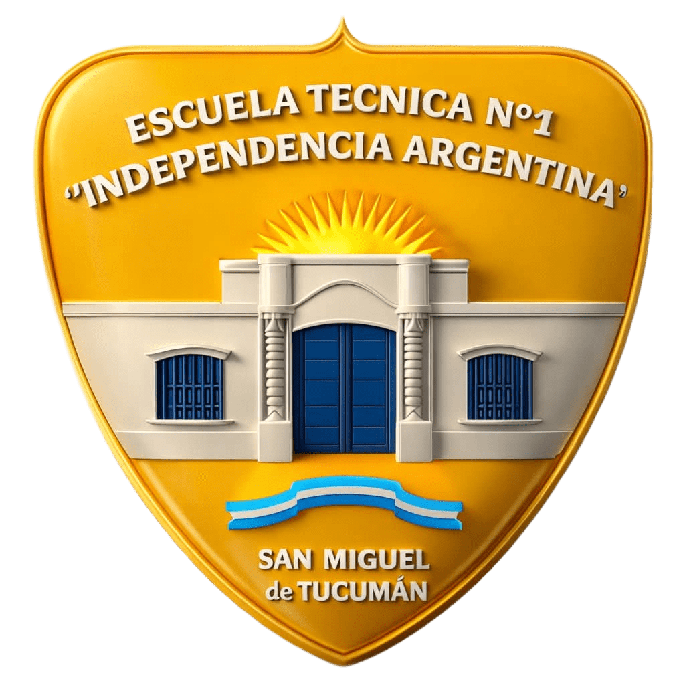

Lógica y Concentración
El ajedrez estimula el pensamiento lógico, la resolución de problemas, la memoria y la toma de decisiones con consecuencias inmediatas.
Proyecto: Ajedrez y Matemática
Una propuesta pedagógica innovadora para transformar los tiempos libres en la Escuela Técnica mediante el desarrollo lógico y el cálculo estratégico.
Ver Galería de FotosAprovechamiento productivo de las horas libres a través del aprendizaje colaborativo entre pares.
El ajedrez estimula el pensamiento lógico, la resolución de problemas, la memoria y la toma de decisiones con consecuencias inmediatas.
Estudiantes de cursos mayores orientan a sus compañeros en el juego, fomentando el aprendizaje cooperativo y la convivencia escolar.
Vinculamos la correcta colocación y coordenadas del tablero mediante pares ordenados y lógica de matrices.
Las dinámicas prácticas del cuadernillo técnico que combinan la aritmética y la geometría con el juego.
Fusión de aritmética y ajedrez. Las piezas tienen un valor numérico específico para resolver situaciones de captura y ecuaciones algebraicas directas.
Variante combinada de Ta-Te-Ti y ajedrez en un tablero reducido de 3x3. Las piezas se desplazan buscando la alineación geométrica exacta.
Registro visual de los talleres de ajedrez, torneos internos de horas libres y la construcción de desafíos matemáticos.


📍 Ministerio de Educación | Tucumán
Una propuesta adaptada para la mejora del clima escolar y el fortalecimiento de valores como el respeto por las reglas, la paciencia y el autocontrol durante los momentos sin clases.
